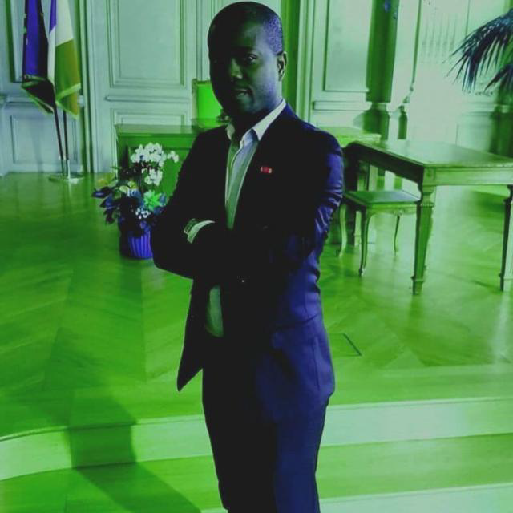

TONER AFRIKA- PREMIUM Les cartouches Toner Afrika sont introduites sur le marché moyen-oriental et africain par ATDN (Gabon) et commercialisées par AFRICA TECHNOLGOGY NETWORK (U.A). Afrikgraph est l'un des principaux fournisseurs Africain de toners laser, rubans, cassettes d'étiquettes et cartouches d'encre compatibles / reconditionnés, créé en 2007 pour répondre au besoin des STARTUPS croissantes de cartouches de qualité supérieure à des prix compétitifs. Au fil des ans, la capacité d’Afrikgraph à accélérer le développement de nouveaux produits, à concevoir des prototypes et à améliorer les délais de commercialisation a fait de nous le partenaire de choix de nombre de nos clients. En conséquence, nos clients sont mieux placés pour faire face à la concurrence car ils disposent de plus de temps pour se concentrer sur les stratégies commerciales et disposent d’un produit parfait sur le marché. Nos cartouches sont fabriquées à partir d'un site de production doté d'installations intégrant les derniers équipements de traitement, ce qui en fait l'un des centres de fabrication les plus efficaces et les plus flexibles. En 2011, nous avons vendu 1,2 million de cartouches de toner en Europe et presque doublé ce chiffre en 2012. Les systèmes d'amélioration continue de la qualité inscrits dans la philosophie «Total Quality» se traduisent par la reconnaissance par la société de l'importance de la qualité menant au obtention de la certification SGS, de la certification ISO 9001: 2008 et du certificat ISO 14001: 2004 des systèmes de management environnemental . L’installation de production a également obtenu l’approbation du STMC par le Conseil de la technologie de l’imagerie. - qui est le sceau d'approbation pour informer l'utilisateur que les cartouches laser ont été testées selon des normes strictes. Notre objectif est de vous fournir une gamme complète et étendue de cartouches compatibles / reconstruites pour les plus grandes marques telles que HP, Brother, Dell, Canon, Epson, Lexmark, Oki, Samsung, Konica Minolta, Kyocera et Xerox . Notre garantie de qualité à 100% peut vous donner la tranquillité d'esprit, sachant que vous serez toujours satisfait et que tout problème sera traité par notre équipe de service à la clientèle experte qui n'est qu'à un coup de fil. Avec plus de 300 000 clients ravis et en croissance dans toute l'Europe, nous nous engageons à vous fournir les cartouches d'encre et de toner dont vous avez besoin pour développer votre entreprise. 
Notre objectif est de vous fournir une gamme complète et étendue de cartouches compatibles / reconstruites pour les plus grandes marques : telles que HP, Brother, Dell, Canon, Epson, Samsung, Konica Minolta, Kyocera et Xerox. Notre garantie de qualité à 100% peut vous donner la tranquillité d’esprit sachant que vous serez toujours satisfait et que tout problème sera traité par notre équipe de service à la clientèle expert qui n’est qu’a un coup de fil. Avec plus de 300 000 clients ravis et en croissance dans toute l’Afrique, nous nous engageons à vous fournir les cartouches d’encre et de toner dont vous avez besoin pour développer votre entreprise.
{kind=link}